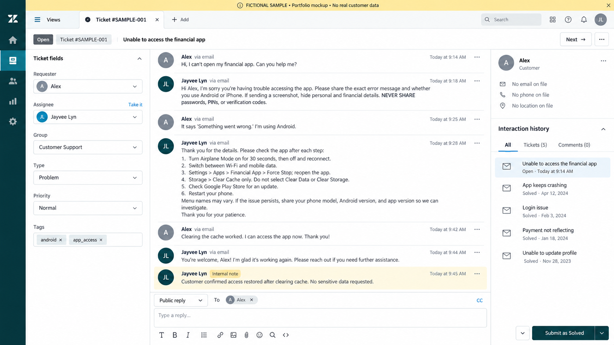

Customer Support
Clear, thoughtful responses to customer concerns through tickets, email, and social media messages.
I help businesses take care of their customers, keep information organized, and stay on top of everyday tasks.
Explore my work ↗Hi, I'm Jayvee — a Civil Engineering graduate and customer support professional based in Meycauayan City, Bulacan, Philippines.
At Concentrix, I handled non-voice customer support for a financial account using Zendesk. I also helped update our team performance spreadsheet and prioritized tickets nearing their SLA deadlines.
Today, I also support our family's photobooth business, KlikTala PH, by responding to inquiries, organizing bookings in Notion, and maintaining its website.
Concentrix · Q2 2025 · Awarded August 2025
Non-voice customer support · Financial account
Clear, thoughtful responses to customer concerns through tickets, email, and social media messages.
Spreadsheet updates, data entry, documentation, and organized records to support daily operations.
Responding to inquiries, checking event details, and keeping booking information easy to find.
Social media inquiry management, simple website updates, and basic Canva designs for small businesses.
 VIEW LIVE WEBSITE ↗
VIEW LIVE WEBSITE ↗Helping our photobooth business turn inquiries into organized bookings, with friendly client communication and a simple online presence.

VIEW FULL SAMPLE ↗A fictional customer support scenario showing how I would respond to a customer who cannot open a financial app on an Android phone.
Fictional sample: Created for portfolio purposes. This is not an actual customer ticket or a screenshot from my previous employer.
Open full-size sample ↗Non-voice CSR · Financial account
Handled customer tickets in Zendesk, supported high ticket volumes, and helped prioritize time-sensitive concerns while keeping responses clear and accurate.
Supported customers with financial account inquiries and account concerns through written support channels.
Manage social media inquiries, organize event and client details in Notion, and maintain a simple business website. This hands-on work has helped turn inquiries into confirmed bookings.
Eulogio Amang Rodriguez Institute of Science and Technology
Manila, Philippines
Meycauayan National High School
Meycauayan City, Bulacan, Philippines
Concentrix · Second Quarter 2025
Top Tier
Coursera
Zendesk · Email correspondence · Case documentation
Google Docs, Sheets, Slides & Drive · Microsoft Office · Notion
Zoom · Google Meet · Discord
Canva · CapCut · Meta Business Suite
ChatGPT · Gemini · Grammarly
Calendar management · Data entry · Time management · Attention to detail · Adaptability
Clarify the request and check the available information.
Set priorities, keep clear records, and follow the right process.
Check the details and communicate the next step clearly.
English · Proficient
Filipino · Native / Bilingual proficiency
A quiet workspace, reliable connectivity, and practical backups for everyday remote work.
Converge Fiber connection
Smart 5G mobile hotspot backup
Portable power station available for backup power.
Ryzen 5 5600G desktop
Noise-cancelling headset · HD webcam
Quiet environment with a professional video-call background.
Available for full-time work, with flexibility across US, UK, and Australian schedules.
Looking for someone who cares about the details and follows through?
I'd love to learn how I can help your team.
veelynbarbacena@gmail.com